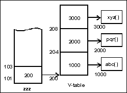

The Makings Of An OCX Container
Our experiments with OLE 2.0 and patience (With apologies to Mahatma Gandhi)
Initiation into the realm of C programming is a sacred ritual. One's first C program must always display Hello, World!
main()
{
printf("Oye, C World!");
}
Short and sweet. A program meant to inspire confidence. How can one but not understand this program? We have never been able to fathom why this line of thinking has not been applied to the samples provided with applications; be it the C/C++ compilers or products such as PowerBuilder.
What brought this little diatribe on? Well, before we can reveal what went into the making of an OCX container, we would like you to accompany us on a trip down memory lane. When we began our quest to learn OLE 2.0, all that was available to us were the samples that came with Microsoft Visual C++. Having recently completed a book on the Microsoft Foundation Classes, we started with the OLE samples implemented using the MFC.
We groaned when we saw the code. It was the same old story being repeated all over again. Each example spread over a dozen files or more with every class prototype in a separate file as also the code for each class. And comments galore. We had been through this rigmarole in the recent past. Those were the days when we were learning the MFC.
Not so old memories flashed before of our eyes. Using < Ctrl + Tab> to switch between files till the thumb and forefinger were sore; using reams of paper to keep track of the different functions in different files.... Trying hard to figure out which function gets called when, why and by whom; determining it's role. Why was a particular class used and not another? Keeping track of the files that contained the prototypes and those with the code. Having been through this circus once, a second time ought to have been simpler.
Misplaced confidence is how we view it now that all this is behind us. Anyway what's done is done. We hunt till we locate the starting point of the program and then tentatively trace the path of execution. We haven't even started and we have opened atleast five to ten files looking for prototypes and code. Never the ones to lose heart easily, we doggedly pursue the task.
Bleary eyed and sore-fingered; not to mention utterly-butterly confused; we decided reading the code on screen ain't going to work. We print out the code and use the pen-n-paper approach instead. We meet with more success this way. As we go through the code it becomes increasingly apparent that a lot of this code can be eliminated. No debugger will ever help in this process and so we have to devise a method to track which of the functions are absolutely essential. file() is our solution.
void file(char* s)
{
FILE *fp = fopen("d:\\a.txt","a+");
fprintf(fp,"%s\n",s);
fclose(fp);
}
This function was to become our beacon in the days to come. We used file() from within every function of a program to write the name of the function onto disk. The resultant file would tell us which functions got called and and more importantly in what order. Assiduously we eliminate unnecessary code, till we get to the heart of the matter; the few lines that implemented the OLE feature. (Small is beautiful)
Frustration was the dominant emotion in our lives. How can one learn from these gargantuan samples? Why couldn't Microsoft give smaller samples with just the essential code? It is as if Microsoft doesn't want anyone to learn OLE. The MFC code just adds to the frustration. While the MFC go a long way in easing OLE implementation, the nitty-gritty of the actual implementation of a feature remains obscured from the user. It is hard to shake-off the sense of uneasiness that lingers from not knowing the finer details of the actual communication between a container and server.
Anyone who says they know OLE just by working on the MFC ought to take a second look at what they know. Do they know how OLE actually works? What are the mechanisms involved? If the MFC were to fail them tomorrow, will they be able to implement a certain feature?
As we went deeper into the MFC implementations of OLE; fewer people seemed to like us. We had often wondered why. Hindsight tells us that we were extremely touchy about our progress. People who ventured to ask us how we were doing with OLE got their heads chewed off. So much for their concern.
The more we dealt with OLE in MFC; the less we seemed to comprehend. So we decided to a put a stop to this madness. MFC wasn't the right doohickey to learn OLE. Resolving to attack the problem at the very root, we shifted our attention to the OLE samples that were implemented in C++. Awesome is a word that barely describes our reaction when we first set our eyes on the code. QueryInterface(), AddRef(), Release(), interface, STDAPI, STDMETHODIMP, HRESULT... We never encountered any of this in the MFC OLE samples. Little of what we saw seemed to make any sense.
But by now we were charged with the desire to master OLE. We weren't about to be thwarted by a few thousand lines of seemingly unintelligible C++ code spread over we-don't-know-how-many files. We rolled up our shirt sleeves and set to work on the code. What is it that they say about `Fools rushing in where angels fear to tread'?
OLE implementation using C/C++ code was all we worked on through days that stretched into sleepless nights. If you say seasons changed in that time, we just have to take your word for it. Sifting through the code was an uphill task. The more we saw of the code the less we liked it. That LibMain() was the starting point of a DLL and WinMain() for an EXE was all that we were sure of. Beyond that it was all a maze. Tens of classes, classes within them, static functions.... Aaaaaaaaaaargh! Charlie Brown couldn't have said it better.
We were people who prided ourselves for our C/C++ knowledge. One amongst us was an acknowledged C/C++ guru. Yet, we often found ourselves floundering. Desperately clutching at straws. If you saw a rag-tag, motley crew who snapped at everybody and every thing within a mile's radius that was us.
Microsoft in it's infinite wisdom seems to forget that the world is populated by mere mortals. Why must it create an application that would win the Nobel prize for structured software and say learn from this? Don't the denizens of Microsoft understand that when someone is trying to learn a new technology hand-holding is a must? This is especially true for something as complex as OLE 2.0.
Why must they have classes that are not really a prerequisite? To add to this have classes within classes? Use static functions and static variables? Use Hungarian as if there was no tomorrow? The programmers at Microsoft would keel over if they saw the smallest program we ever wrote. It fits on less than one page. We had a simple OLE 2.0 container and an OLE automation controller where there was not a single interface implemented. If OLE 2.0 is to become a standard, then shouldn't Microsoft atleast ensure that people can learn OLE?
A few points about the OLE 2.0 documentation:
- People can make a comfortable living documenting the erring ways of the OLE documentation. A typical example of this is when the documentation talks about the difference between the loaded state and the running state of an OLE server. We are not too sure when we are in which state. May be this is so fuzzy because the writer was loaded with a few pegs of the right stuff.
- One line of code is worth a thousand words. But with the OLE documentation, the code fragments blur the issue further. Even a thousand words wouldn't suffice to explain the code fragments.
- Marshalling, one of the most important concepts of OLE is also one that is dealt with most cursorily. Most of the information on marshalling can be had from a separate MS-Word file and not the help. This file too stops short of giving full details. One good joke is it's redeeming feature.
- The documentation starts with the concepts of OLE. These are so finely explained that they are the best way to confuse a person; friend and foe alike.
- The OLE Automation help addresses one of our grouses: the help never states specifically the steps involved in writing an application. In doing this, however, it leaves out the explanations. Take care of the dimes and the dollars will take care of themselves? Why does Microsoft always do one or the other and never both?
The documentation is a definite contender for the Booker prize. A few hints as to why the OLE 2.0 documentation is the way it is:
- Whoever wrote it sat with a Thesaurus next to him. Each and every word was looked up and replaced with an obscure equivalent.
- There was a meeting of the core committee at Microsoft where they decided that anybody who commits to anything will be lined up and shot dead. Thus, the OLE documentation is extremely evasive. There are several things that should happen but will they happen? Not even Microsoft knows.
- There were two guys, Tweedle-dee & Tweedle-dum, involved in the writing process: Tweedle-dee's was a comprehensive work which explained the details. Tweedle-dum specialized in incomprehensible precis-writing. With Tweedle-dum editing the documentation, the results are there for all to see.
- Or is it possible that Microsoft in beta-testing OLE 2.0 found that the Russians were the fastest to learn OLE? So they gave them the task of writing the documentation? or was it the Germans? or the Japanese?
Learning OLE 2.0 is a humbling experience in the true sense of the word. If eventually, we did understand OLE and the philosophy behind it; (have we spoken too soon?) it was because C/C++ was ingrained in our psyche. Because we were unrelenting. And because we made it an issue of prestige. And boy! Did OLE teach us a thing or two about C++ or did it?
Virtual reality
Anyone who seeks to learn OLE should know virtual functions like the back of their hand. This is the only reason why we are running through some crucial facts about virtual functions at this point. While reading this section is not mandatory, we suggest that you do. May be it will give you an insight or two into the finer aspects of virtual functions.
When a class containing virtual functions is instantiated an array of pointers to functions is created. This array is called the V-table. Each virtual function in the class has it's address stored as an element in the V-table. In what order are the pointers stored in the V-table? Very simple! The address of the first virtual function in the class definition is the first element of the V-table; the address of the second virtual function is the second element and so on.
Thus, there is a one to one correspondence between the position of the virtual function in the class definition and the position of it's address in the V-table. For a clearer perspective of this issue, consider the following example:
class zzz
{
public:
virtual void abc(){}
virtual void pqr(){}
virtual void xyz(){}
};
main()
{
zzz *b = new zzz;
}
On execution, the line `zzz *b = new zzz' creates an instance of the class zzz. At this point, it also forms the V-table. In the V-table, the first pointer points to abc(), the second to pqr() and the third to xyz().
For the non-virtual functions in a class; the compiler + linker replaces all references to a function with the address of the function. Thus, function addresses are hard-coded into the final EXE. However, when a virtual function is encountered the compiler + linker does something totally different.
Let us use a specific example to understand this.

`new zzz' creates the object at memory locationn 100. So, b is equal to 100. Beginning at 100 is a pointer, say 200. 200 is where the V-table begins. From 200 to 203 is a pointer, 1000, to the function abc(). From 204 to 207 is the pointer, 2000, to the function pqr() and 208 to 211 is occupied by a pointer, 3000, to xyz().
If we have a line of code `b-> pqr()' then the compiler + linker combination will replace it with a call to the function that starts at the address given by `*(*b+4)'. In our case this address evaluates to 2000. In general, `*(*b+4*n)' is the address of the function to be called where `n' is the index of the virtual function in the class definition. What if we had a line `b-> xyz()'? Then the compiler + linker combination will replace it with a call to the function starting at the address given by `*(*b+8)'.
class yyy: public zzz
{
public:
virtual void lmn(){}
virtual void efg(){}
void xyz(){}
void pqr(){}
};
What do you think is the order of the function pointers in the V- table of the class yyy? In the V-table of the class yyy, the pointers point to the functions in the following order: abc(), pqr(), xyz(), lmn() and efg(). But the class yyy has no virtual function by the name of abc(). So what is the address put in the V-table? The class yyy is derived from the class zzz. So, it inherits all the functions of the class zzz. Thus, the function abc() is provided by the class zzz.
Since, the functions xyz() and pqr() are implemented by the class yyy it is the code provided by class yyy that is executed and not that by the class zzz.
Thus, we see that the virtual functions that were defined in the class zzz are represented in the V-table of class yyy and in the same order as they appeared in the prototype of the class zzz.
The pointers to the functions lmn() and efg() are added to the end of this V-table. The pointers for lmn() and efg() are added to the V-table in the order in which they appear in the class yyy. Hence, for a derived class the V-table consists of the virtual functions of the base class plus it's own virtual functions in that order.
OLE is all about interaction between two applications. The very fact that there are two applications brings up a host of questions. Each application is assigned it's own niche in memory. Each might implement a feature in an unique way. How then does one access functions in the other? How does one application know which functions are implemented in the other? In fact, how are the two applications to communicate? These questions are answered if we explain how OLE operates.
Face to face with an interface
A structure is a collection of variables. Add some functions to a structure and we have a class. What if we removed the variables from a class? What do we have but an interface. An interface is more than just a collection of functions. It is a set of pure virtual functions.
In the days before OLE, we had to deal with just one application at a time. Functions calls were always restricted to functions that were present within the same application. In such a situation, virtual functions essentially provided the user with a means of over-riding a base-class function implementation with one of his own.
When we talk of OLE, the scenario is totally different. Now, two applications communicate by calling functions in each other. They cannot use non-virtual functions to do so. The compiler + linker combination will replace all calls to non-virtual functions by their addresses. If one program has calls to functions that exist in the other, then at the time of linking it does not know the address for these functions.
The only way out is to use virtual functions. As we had stated earlier, in the case of virtual functions the function calls are replaced by a number that indicates the relative position of the function in the V-table.
OLE has been designed such that all functions that can be used to implement a certain feature are grouped together to form an interface. When an application wants to access a certain feature of the other, it requests for and obtains the pointer to the appropriate interface in the other and then uses it to call the required functions.
If every programmer was to implement his own interfaces then there would be utter chaos. In defining interfaces, each programmer will implement his own set of functions. The result of calling a function in such a set will be entirely unpredictable. Since the very reason for the existence of OLE is to allow different applications to communicate, there must be certain ground rules that are to be followed by all parties involved.
It is to this end that Microsoft has defined standard interfaces for almost all commonly required features. For example, IPersistStorage is the interface that has functions that are used to implement storage; while IOleInPlaceSite and IOleInPlaceFrame are used to provide support for in-place activation.
Since, each of these standard interfaces is nothing but a collection of pure virtual functions none of them have code provided from them. It is upto the user to add code in the derived interface. The interface definitions merely define the prototypes and set the order of virtual functions. By deriving from the standard interfaces, the user is saved the bother of having to ensure that the correct order of the virtual functions in maintained.
What mystifies us is that all the functions in the interfaces have been made pure virtual? All Microsoft wanted was to maintain the order of functions. Wouldn't simple virtual functions have been just as effective? Or is it that the OLE team at Microsoft prefers compiler errors to linker errors?
Every interface is provided with an unique identifier. It is this identifier that is used to refer to an interface rather than it's name. What do you think the data type of this identifier would be? An integer? A long, perhaps? Hah! Never could we be more in the wrong. Microsoft thinks BIG. It has assigned a structure to hold the identifier. This structure is referred to variously as GUID, CLSID, IID or even an UUID. ( What's in a name?). When this structure is used in association with an interface it is called an IID; an interface identifier.
All the standard interfaces provided by Microsoft are derived from an interface called IUnknown. This interface has three pure virtual functions. Thus, the first three functions in any interface will be the IUnknown functions. The first and the most important of them is called QueryInterface().
QueryInterface() is the fountainhead of knowledge. Whenever an application wants to know what interfaces the other supports it will call QueryInterface() of the latter. QueryInterface() is to be passed two parameters. The first is an IID which will identify the interface we are looking for. The second is the address of a pointer variable that QueryInterface() will fill up with the address of the interface; if it exists.
It is the return value of QueryInterface() that will tell us if the interface existed or not. Earlier, most functions would have the required data as the return value. But in case of failure, we could rarely determine why a function call failed.
In the case of OLE, failure can be attributed to either of the parties involved. So, it is imperative that we know why a function call has failed. Is it because we didn't provide sufficient information? Because the other side does not have what we are looking for? or other reasons like insufficient memory. With OLE, the return values of most functions indicate the nature of failure. The return value is of a data type called HRESULT; which is nothing but a `void *'.
As of now, it is the absolute value of this returned pointer that indicates the status of a function call. An HRESULT of value 0000:0000 indicates success while non-zero indicates failure. Since, HRESULT is essentially a pointer, Microsoft could change its definition, so that it points to a structure. This structure can then be used to hold the error information.
Imitation is the best form of flattery
Order! Order! Order! The order of virtual functions. That's all that matters when we talk of interfaces. A user derives from the pre-defined interfaces only to ensure that the order of virtual functions is maintained and for no other reason. Time and again we stress on this fact as it is of utmost importance.
An interface may have twenty-five functions in it. But this does not guarantee that all the twenty-five functions will be used. Microsoft always has one eye trained on the future. It has tried to cover all it's bases by providing interfaces and/or functions to meet every eventuality. IPersistStorage for saving and/or loading, IViewObject for drawing, IAdviseSink for an advise loop, ICoke for which soft drink, IPopCorn, IPizza....
It has been our experience with most interfaces that only a few of the several functions in it get used. Many a time this is as few as two functions of twenty-five. A typical example of this is the interface IOleInPlaceSite. Just two of it's functions require to be implemented if an OLE object is to appear in-place.
If we derive from the standard interfaces then we have to provide an implementation for every function. So, we have created our own interfaces which replicate the functionality of a standard interfaces. The functions that are to be implemented are given the same name as in the original interface while all others are named in our own inimitable style. All those functions that can be eliminated have been eliminated.
For example, GetWindow() and GetWindowContext() of IOleInPlaceSite are always called for an in-place active object. These functions are the fourth and the ninth functions respectively in the interface IOleInPlaceSite. MOleInPlaceSite is our class and in it while GetWindow() and GetWindowContext() occupy their respective positions all other functions have been renamed. Note that the dummy functions have been defined as virtual so that the relative positions of the two functions in use do not change.
A taste of things to come
A deep calming breath marked the start of our latest adventure; writing an OCX container. Microsoft provides only the EXE file for the OCX container. We, thus, had no source code available; only our OLE experiences to rely on. The entire process was relatively trouble free; only a few hiccups along the way. The result is a program about 1500 lines long.
The container implements most of the features seen in the Microsoft OCX container and perhaps a few more. Some features have been implemented so as to provide the user with a deeper insight in to the workings of an OCX. We were sorely tempted to present you with one gigantic program in the best traditions of most of the Microsoft samples. Better sense prevailed and we decided to put forth the program, one feature at a time.
As we add features to any program, a number of function prototypes and/or variables, may be a class or two have to be added to it. Instead of repeating the entire program code as and when a feature is added, we have this first program. It is a chassis of the entire program. Most of the functions that will be required over a period of time are represented by their stubs.
Kraig Brockschmidt; the author of Inside OLE 2.0; had apologized on using a single global variable. We however have no qualms about using global variables. In fact, we have just two types of the variables. All variables that are to be used by different functions have been made global. Then there are those variables that are local to the functions in which they are used.
This might not be in the interest of ideal programming practices, but we'd rather have you learn from our code. If a variable definition cannot be located within the function, then by default it is global. Since all global variables are grouped together locating them is no problem. We did not want someone who is reading this program to have to constantly flip pages to look up the different class prototypes for a variable definition.
In naming our variables, we have used z_ as the prefix. The name of a variable reflects it's use. The class names always begin with an M. In the case of the classes derived from the MFC, the name is formed by replacing the C of the original class name by an M. Thus, MDialog is the CDialog derived class. For the classes created to replicate the purpose of a standard interface, the I in the name of the interface is replaced by M. For example, MOleClientSite is the IOleClientSite substitute.
For all functions any parameters that are reserved by Microsoft for future use or are not used are not explained.
As we build a feature into the program, the stubs of the functions in use will get filled up. Thus, we slowly flesh out the skeleton. You will have to use the code provided in place of the stub or already existing code to obtain a full-fledged working feature.
Key-in the program as is. This also holds true for the RC file and the associated header file resource.h that are provided at the end of the news-letter. The container will be a Windows EXE. We always use the LARGE memory model. The linker will require these additional libraries in addition to the default provided when we create the project: ole2, ole2disp, ole2nls, mfcoleui, compobj, storage, typelib, oc25.
Program 1
#include < afxwin.h>
#include < afxext.h>
#include < ole2.h>
#include < ole2ui.h>
#include < dispatch.h>
#include < initguid.h>
#include < olectl.h>
#include "resource.h"
// Structure used to store details about the properties of an OCX
struct PData{
char *z_sPropName;
DISPID z_lDispID;
VARTYPE z_nPropType;
BOOL z_nPtr;
PData *z_pNext;
};
// Structure used to store details about the properties/ events of an OCX
struct FData{
char *z_sFName;
char **z_sPName;
DISPID z_lDispID;
int z_nNumParams;
VARTYPE *z_pPTypes;
VARTYPE z_nRType;
BOOL z_nPtr;
FData *z_pNext;
};
// Structure to store code for an event
struct CData{
long z_lDispID;
char **z_sFunction;
int z_nCount;
CData *z_pNext;
};
// Array used for display and comparison for the data types
char *z_VarType[] = {"VT_EMPTY","VT_NULL","VT_I2","VT_I4","VT_R4","VT_R8",
"VT_CY","VT_DATE","VT_BSTR","VT_DISPATCH","VT_ERROR","VT_BOOL",
"VT_VARIANT","VT_UNKNOWN","VT_I1","VT_UI1","VT_UI2","VT_UI4","VT_I8",
"VT_UI8","VT_INT","VT_UINT","VT_VOID","VT_HRESULT","VT_PTR", "VT_SAFEARRAY",
"VT_CARRAY","VT_USERDEFINED","VT_LPSTR", "VT_LPWSTR","VT_FILETIME",
"VT_BLOB","VT_STREAM","VT_STORAGE","VT_STREAMED_OBJECT",
"VT_STORED_OBJECT","VT_BLOB_OBJECT","VT_CF","VT_CLSID"
};
// OLE Interfaces
class MOleClientSite
{
public:
virtual void* _export _cdecl QueryInterface(REFIID,void**) {return 0;}
virtual unsigned long _export _cdecl A1() {return 0;}
virtual unsigned long _export _cdecl A2() {return 0;}
virtual void* _export _cdecl A3() {return 0;}
virtual void* _export _cdecl A4() {return 0;}
virtual void* _export _cdecl A5() {return 0;}
virtual void* _export _cdecl A6() {return 0;}
virtual void* _export _cdecl A7() {return 0;}
};
class MOleInPlaceFrame
{
public:
virtual void* _export _cdecl B1() {return 0;}
virtual unsigned long _export _cdecl B2() {return 0;}
virtual unsigned long _export _cdecl B3() {return 0;}
virtual void* _export _cdecl B4() {return 0;}
virtual void* _export _cdecl B5() {return 0;}
virtual void* _export _cdecl B6() {return 0;}
virtual void* _export _cdecl B7() {return 0;}
virtual void* _export _cdecl B8() {return 0;}
virtual void* _export _cdecl B9() {return 0;}
virtual void* _export _cdecl B10() {return 0;}
virtual void* _export _cdecl B11() {return 0;}
virtual void* _export _cdecl B12() {return 0;}
virtual void* _export _cdecl B13() {return 0;}
virtual void* _export _cdecl B14() {return 0;}
};
class MOleInPlaceSite
{
public:
virtual void* _export _cdecl C1() {return 0;}
virtual unsigned long _export _cdecl C2() {return 0;}
virtual unsigned long _export _cdecl C3() {return 0;}
virtual void* _export _cdecl GetWindow (HWND *) {return 0;}
virtual void* _export _cdecl C4() {return 0;}
virtual void* _export _cdecl C5() {return 0;}
virtual void* _export _cdecl C6() {return 0;}
virtual void* _export _cdecl C7() {return 0;}
virtual void* _export _cdecl GetWindowContext(IOleInPlaceFrame**,IOleInPlaceUIWindow**,
RECT*,RECT*,OLEINPLACEFRAMEINFO*) {return 0;}
virtual void* _export _cdecl C8() {return 0;}
virtual void* _export _cdecl C9() {return 0;}
virtual void* _export _cdecl C10() {return 0;}
virtual void* _export _cdecl C11() {return 0;}
virtual void* _export _cdecl C12() {return 0;}
virtual void* _export _cdecl C13() {return 0;}
};
class MDispatch
{
public:
virtual void* _export _cdecl QueryInterface(REFIID,void **) {return 0;}
virtual unsigned long _export _cdecl D1() {return 0;}
virtual unsigned long _export _cdecl D2() {return 0;}
virtual void* _export _cdecl D3() {return 0;}
virtual void* _export _cdecl D4() {return 0;}
virtual void* _export _cdecl D5() {return 0;}
virtual void* _export _cdecl Invoke(DISPID,REFIID,LCID,unsigned short,
DISPPARAMS *,VARIANT *,EXCEPINFO *,UINT *);
};
// MFC classes
class MDialog:public CDialog
{
public:
MDialog(int) {}
BOOL OnInitDialog()
{
return TRUE;
}
void OnOK() {}
void Select() {}
void Single() {}
void Many() {}
void Save() {}
void Test1() {}
void Test(BOOL z_nFlag = 0,CData *z_pCDSearch = 0) {}
void PropValue() {}
void MulProp() {}
void DispPropPage() {}
void Accept() {}
void UIDead() {}
void AmbBackColor() {}
void FuncExec(char*) {}
void Initialize(VARIANT*,char*,int);
void RetVal(VARIANT *);
DECLARE_MESSAGE_MAP()
};
BEGIN_MESSAGE_MAP(MDialog,CDialog)
ON_LBN_SELCHANGE(IDC_LIST1,Select)
ON_LBN_SELCHANGE(IDC_LIST2,PropValue)
ON_BN_CLICKED(IDC_BUTTON1,Single)
ON_BN_CLICKED(IDC_BUTTON2,Many)
ON_BN_CLICKED(IDC_BUTTON3,MulProp)
ON_BN_CLICKED(IDC_TEST,Test1)
ON_BN_CLICKED(IDC_SAVE,Save)
ON_BN_CLICKED(IDC_PROPPAGE,DispPropPage)
ON_BN_CLICKED(IDC_RADIO1,UIDead)
ON_BN_CLICKED(IDC_RADIO2,UIDead)
ON_BN_CLICKED(IDC_BACKCOLOR,AmbBackColor)
ON_BN_CLICKED(IDC_ACCEPT,Accept)
END_MESSAGE_MAP()
class MFrameWnd:public CFrameWnd
{
public:
MFrameWnd();
void OnPaint() {}
void OnLButtonDown(UINT,CPoint) {}
void OnLButtonDblClk(UINT,CPoint) {}
void OnMouseMove(UINT,CPoint) {}
void InsertControl();
void ObjCreate(CLSID);
void InitArray() {}
void UserDefined(ITypeInfo*,TYPEDESC*,VARTYPE*) {}
void Ptr(ITypeInfo*,TYPEDESC*,VARTYPE*) {}
void SaveToStorage() {}
void LoadFromStorage() {}
void Properties() {}
void Methods() {}
void Events() {}
void Single() {}
void Multiple() {}
void Execute() {}
void PrimaryVerb() {}
void ShowVerb() {}
void OpenVerb() {}
void HideVerb() {}
void UIActivateVerb() {}
void PropertiesVerb() {}
void ChangeProperty() {}
void AmbientProperties() {}
DECLARE_MESSAGE_MAP()
};
BEGIN_MESSAGE_MAP(MFrameWnd,CFrameWnd)
ON_WM_PAINT()
ON_WM_LBUTTONDOWN()
ON_WM_LBUTTONDBLCLK()
ON_WM_MOUSEMOVE()
ON_COMMAND(ID_FILE_SAVETOSTORAGE,SaveToStorage)
ON_COMMAND(ID_FILE_LOADFROMSTORAGE,LoadFromStorage)
ON_COMMAND(ID_EDIT_INSERTOBJECT,InsertControl)
ON_COMMAND(ID_EDIT_INVOKESINGLEMETHOD,Single)
ON_COMMAND(ID_EDIT_INVOKEMULTIPLEMETHODS,Multiple)
ON_COMMAND(ID_EDIT_EXECUTINGEVENTS,Execute)
ON_COMMAND(ID_EDIT_CHANGEPROPERTIES,ChangeProperty)
ON_COMMAND(ID_EDIT_AMBIENTPROPERTIES,AmbientProperties)
ON_COMMAND(ID_CONTROL_PRIMARY,PrimaryVerb)
ON_COMMAND(ID_DISPLAY_PROPERTIES,Properties)
ON_COMMAND(ID_DISPLAY_METHODS,Methods)
ON_COMMAND(ID_DISPLAY_EVENTS,Events)
ON_COMMAND(ID_CONTROL_SHOW,ShowVerb)
ON_COMMAND(ID_CONTROL_OPEN,OpenVerb)
ON_COMMAND(ID_CONTROL_HIDE,HideVerb)
ON_COMMAND(ID_CONTROL_UIACTIVE,UIActivateVerb)
ON_COMMAND(ID_CONTROL_PROPERTIES,PropertiesVerb)
END_MESSAGE_MAP()
class MWinApp:public CWinApp
{
public:
BOOL InitInstance();
int ExitInstance();
};
// Global Variables
int z_nID;
FData *z_pFDSearch;
CLSID z_PropClsid;
CMapStringToString z_sPrgID;
MFrameWnd *z_pFrameWnd;
MDialog *z_pDialog;
MOleClientSite *z_pOleClientSite;
MOleInPlaceFrame *z_pInPlaceFrame;
MOleInPlaceSite *z_pOleInPlaceSite;
MDispatch *z_pDispatch;
CRectTracker *z_pTracker;
COLORREF z_lSelColor;
BOOL z_nActive,z_nUIDead;
CLSID z_Clsid,z_ClsidEvents;
IOleObject *z_pOleObject;
HWND z_hFWnd;
CRect z_Rect(50,50,150,200);
CMenu *z_pMenu;
CData *z_pCDPrev;
// starting pointer to the link - list that will store the method details
FData *z_pFDFirst;
// starting pointer to the link - list that will store the event details
FData *z_pEDFirst;
// starting pointer to the link - list that will store the event - code
CData *z_pCDFirst;
// starting pointer to the link - list that will store the property details
PData *z_pPDFirst;
// The Start
MWinApp z_App;
// MFrameWnd Functions
MFrameWnd::MFrameWnd()
{
Create(0,"OCX Container");
z_pMenu = new CMenu;
z_pMenu-> LoadMenu(IDR_MENU1);
SetMenu(z_pMenu);
}
void MFrameWnd::InsertControl()
{
CLSIDFromString("Button.ButtonCtrl.1",&z_Clsid);
ObjCreate(z_Clsid);
}
void MFrameWnd::ObjCreate(CLSID z_TempClsid)
{
IClassFactory *z_pClassFactory;
CoGetClassObject(z_TempClsid,1,0,IID_IClassFactory,(void**)&z_pClassFactory);
z_pClassFactory-> CreateInstance(0,IID_IOleObject,(void**)&z_pOleObject);
z_pOleObject-> DoVerb(OLEIVERB_OPEN ,0,0,-1,m_hWnd,(RECT*)0);
}
void MDialog::Initialize(VARIANT *, char *,int)
{}
void MDialog::RetVal(VARIANT *)
{}
// MWinApp Functions
BOOL MWinApp::InitInstance()
{
OleInitialize(0);
z_pFrameWnd = new MFrameWnd;
m_pMainWnd = z_pFrameWnd;
z_hFWnd = z_pFrameWnd-> m_hWnd;
z_pFrameWnd-> ShowWindow(SW_SHOWNORMAL);
return TRUE;
}
int MWinApp::ExitInstance()
{
OleUninitialize();
CWinApp::ExitInstance();
return 0;
}
// MDispatch Functions
void* _export _cdecl MDispatch::Invoke(DISPID,REFIID,LCID,unsigned short,
DISPPARAMS *,VARIANT *,EXCEPINFO *,UINT *)
{
return 0;
}
When you are learning something new, a few compiler warnings are always a good omen. So on compiling this program, do not bother with the warnings that appear. These warnings are a result of the fact that we have used very few of the scores of variables that have been defined. To test the container, we need an OCX. Button is the name of a sample OCX provided with Visual C++ 1.51. Generate the type library, compile and register the OCX.
Execute the container program. Select the Insert Control... sub-option under Edit. This brings in the OCX Button. This OCX will appear in a separate window; viz. as an embedded object.
Since, it is an MFC program, InitInstance() of the CWinApp derived class is the first function to get executed. The OLE libraries are responsible for keeping track of all the applications that are availing of OLE at any given time. Thus, every application that is going to use OLE must inform the OLE libraries of this. The only means available to do this is to use the OLE API OleInitialize(). What OleInitialize() exactly does is a mystery to us. Microsoft is extremely non-specific about this function. Similarly, once an application no longer needs any OLE support it has to inform the OLE libraries. We use OleUninitailize() in ExitInstance() to indicate that we are done with OLE.
In the MFrameWnd constructor, we merely create a window with the title `OCX Container' and use the class CMenu to add a menu to it. We have used the class CMenu because we want to add to this menu later in the program.
The handle to the window is stored in the global variable z_hFWnd. This information is often required for reasons such as indicating the parent window to the OCX.
In the function InsertControl(); which gets called on selecting the menu-option Insert Control...; we determine the CLSID associated with the OCX. ( What's in a name?). The OLE API CLSIDFromString() will search the registration database for the CLSID associated with the string passed to it as the first parameter. The CLSID that is recovered is passed as a parameter to ObjCreate().
As you may have noticed here, we do not determine if we have a valid CLSID. In fact, we do not have any error checks in this program. Error checks mean a lot of code. Code that comes in the way of learning.
In ObjCreate(), we use CoGetClassObject(); the most important OLE API. It is responsible for loading the OCX into memory. The first parameter is the CLSID of the OCX. The second parameter to CoGetClassObject() is used to indicate the type of program. 1 indicates that it is a DLL. The first interface requested from the OCX is always IClassFactory. So, IID_IClassFactory is the fourth parameter to the function CoGetClassObject(). The fifth is the address of an IClassFactory pointer variable.
CoGetClassObject() searches the registration database to determine the name and full path of the application pointed to by the CLSID and loads it into memory. It will then call the function DllGetClassObject() in the OCX.
Of the three parameters to DllGetClassObject(), the second parameter is the IID of the interface whose pointer is requested, IID_IClassFactory in our case. The third parameter is the address of a pointer variable. This variable will hold the pointer to the interface IClassFactory.
In DllGetClassObject(), the OCX will create an instance of the requested interface and pass the pointer back to the calling program via it's third parameter. The container recieves this pointer via the fifth parameter of CoGetClassObject().
This IClassFactory pointer is used by the container to call CreateInstance() in the OCX. CreateInstance() is the fourth function of the IClassfactory interface. The second parameter to this function is the IID of the required interface while the third holds the address of the pointer variable. We call CreateInstance() with IID_IOleObject as the second parameter and are returned the IOleObject pointer.
At this point, it is important to examine the two functions, CoGetClassObject() and CreateInstance(). Being an OLE API, the utility of CoGetClassObject() has already been decided. We have no say in the matter. CreateInstance(), on the other hand, is all ours. It is a function in an interface and hence the person writing the OCX has to provide the code that should be executed when CreateInstance() is called.
Since, these two functions go hand in glove, the functionality of the two functions is available in a single helper function CoCreateInstance(). However, we believe that at this stage, helper functions will do exactly what they are meant to do i.e. obscure the details. And this is something that we want to avoid at all cost as it is will be like taking an easy-road diversion right in the beginning of a cross-country rally. If you wanted to cruise along on the straight and narrow roads you would not be participating to start with. Now that the OCX is loaded into memory, to display the OCX, we have to call the IOleObject function DoVerb().
A verb is always related to some kind of action. This is true in the OLE context too. A number of #defines are provided to prompt the OCX into action. OLEIVERB_OPEN causes the OCX to appear as an independent window separate from that of the container. Whenever an OLE server is displayed in such a manner, it is called an embedded object. We have passed this as the first parameter to DoVerb(). Also passed to DoVerb() is the handle to the parent window.
Continue